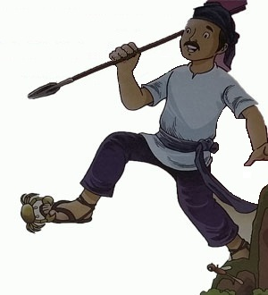

Sigarlaki dan Limbat
( Cerita Rakyat Sulawesi Utara )
Dahulu didaerah Tondano, Sulawesi Utara, ada seorang pemburu yang bernama Sigarlaki. Ia dikenal memiliki keterampilan menombak. Sigarlaki memiliki pelayan yang setia, bernama Limbat. Sigarlaki menyuruh sesuatu, pasti dapat ia kerjakan dengan baik. Pada suatu hari, Sigarlaki berburu ke hutan. Namun hasil tangkapannya tidak seperti biasanya, tidak ada seekor binatang pun yang tampak. Ia begitu kesal dengan kenyataan itu. Kekesalannya semakin memuncak tatkala Limbat melaporkan daging persediaan mereka dirumah hilang dicuri orang. Sigarlaki malah menuduh Limbat sebagai pencurinya. Limbat sebagai tertuduh harus membuktikan bahwa ia tidak bersalah.
Sigarlaki membuat aturan main sendiri. Ia akan menancapkan tombaknya ke dasar sungai, kemudian ia menyuruh Limbat menyelam ke dasar sungai itu. Kalau tombak itu lebih cepat muncul ke permukaan, artinya Limbat tidak bersalah. Namun, bila Limbat yang lebih dulu keluar dari sungai, berarti ia pencurinya. Timbul rasa takut dalam diri Limbat mendengar aturan yang aneh itu. Ia pun menyelam ke dasar sungai dan Sigarlaki menancapkan tombaknya. Tapi, baru beberapa detik berjalan, Sigarlaki melihat seekor babi hutan melintas. Ditariknya kembali tomba dan dilontarkan ke arah babi hutan itu. Sayangnya, tombak itu tidak mengenai sasaran. Sesuai aturan Sigarlaki, seharusnya Limbat bebas dari segala tuduhan. Namun, Sigarlaki meminta pembuktian ulang.
Kemudian Limbat menyelam untuk kedua kalinya. Ketika Sigarlaki menancapkan tombaknya ke sungai, seekor kepiting besar menggigit kakinya. Sigarlaki kesal sekali, ia lalu mencabut tombaknya. Sambil terpincang-pincang, ia berusaha memukul kepiting itu dengan tongkatnya. Untuk kedua kalinya Limbat keluar dari sungai. Ia bersyukur, kejujurannya teIah terbukti. Sigarlaki pun meminta maaf kepada Limbat. Sejak saat itu, Sigarlaki tak pernah lagi menuduhnya dengan sembarangan.